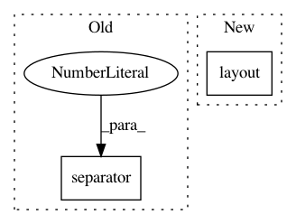

e8270c8498cddaf3ec9e3acc22e2ec02e6832f04,Orange/widgets/data/owdatasampler.py,OWDataSampler,__init__,#OWDataSampler#,47
Before Change
gui.checkBox(
ibox, self, "replacement", "Sample with replacement",
callback=set_sampling_type(self.FixedSize))
gui.separator(sampling, 12)
gui.separator(sampling, 12)
gui.appendRadioButton(sampling, "Cross Validation:")
form = QtGui.QFormLayout(
After Change
gui.button(self.controlArea, self, "Sample Data",
callback=self.commit, addSpace=8)
self.controlArea.layout().addWidget(self.report_button)
def sampling_type_changed(self):
self.settings_changed()
In pattern: SUPERPATTERN
Frequency: 3
Non-data size: 2
Instances
Project Name: biolab/orange3
Commit Name: e8270c8498cddaf3ec9e3acc22e2ec02e6832f04
Time: 2015-12-18
Author: janez.demsar@fri.uni-lj.si
File Name: Orange/widgets/data/owdatasampler.py
Class Name: OWDataSampler
Method Name: __init__
Project Name: biolab/orange3
Commit Name: 51aa7adbc1371e159afb28b7b42bcec876d1635c
Time: 2016-04-15
Author: janez.demsar@fri.uni-lj.si
File Name: Orange/widgets/unsupervised/owdistancetransformation.py
Class Name: OWDistanceTransformation
Method Name: __init__
Project Name: biolab/orange3
Commit Name: 51aa7adbc1371e159afb28b7b42bcec876d1635c
Time: 2016-04-15
Author: janez.demsar@fri.uni-lj.si
File Name: Orange/widgets/regression/owlinearregression.py
Class Name: OWLinearRegression
Method Name: add_bottom_buttons